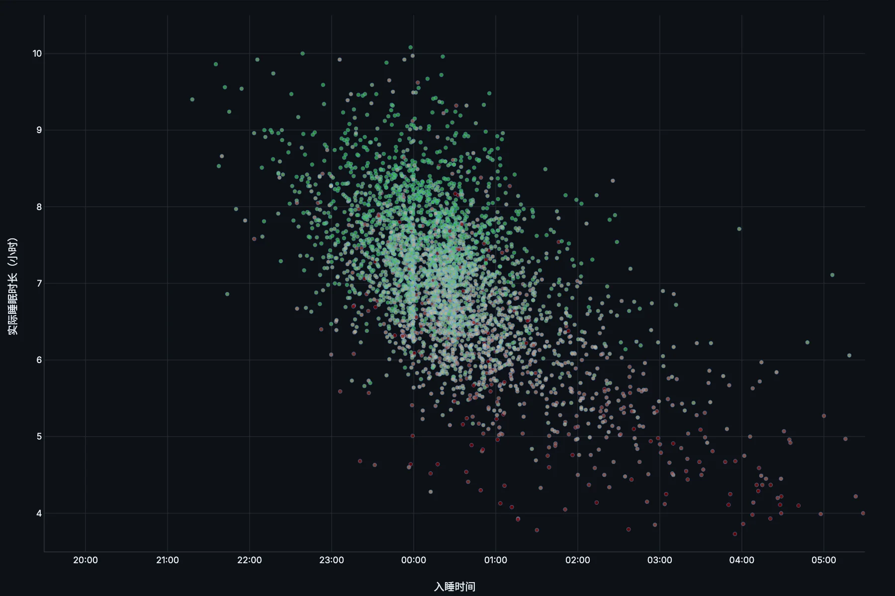
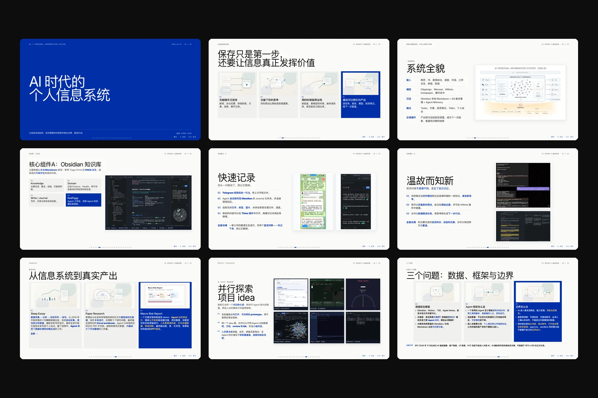
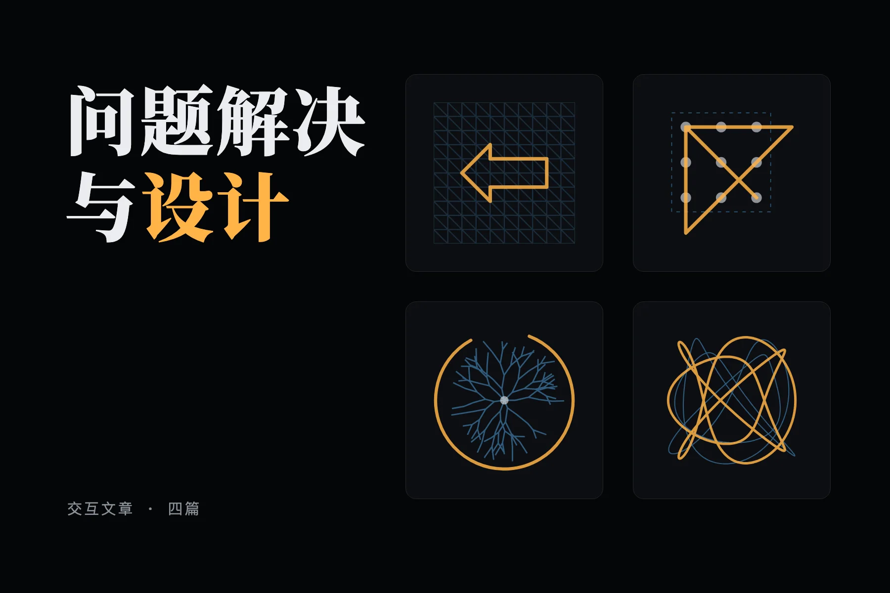
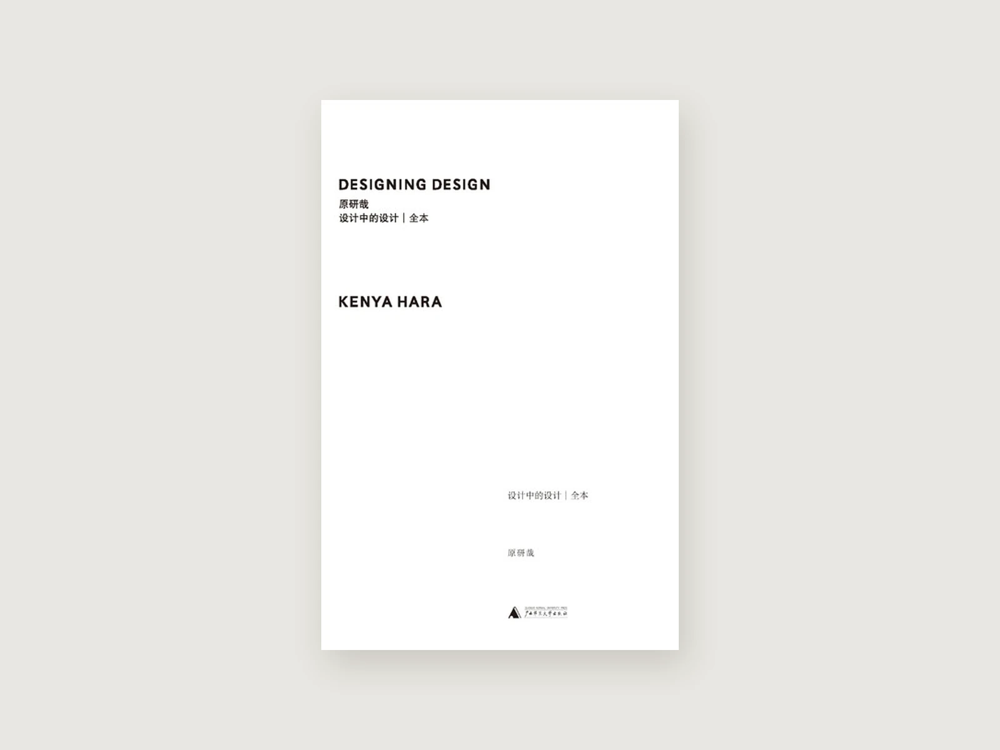

精选
01 / 05

01 十年睡眠档案：数据分析 基于 3,656 条睡眠记录，回看十年的睡眠、身体与生活变化。 打开
02 AI 时代的个人信息系统 45 分钟的分享：捕捉、知识库、Agent 和安全边界，怎样连成一套运转的系统。 打开
03 问题解决与设计 2016 至 2017 年的四篇短文，改编成可以动手的页面：拖动半径、找藏起来的箭头、规划过海路线、给电车难题称重。 打开 04 我的哈巴雪山之旅 爬 5,396 米的哈巴雪山：训练、风险和身体的反馈。 打开
05 设计中的设计 读原研哉：把“我知道”放开，沿河滑行，在沙上写字，让熟悉的世界重新变得陌生。 打开最新
更新于 2026-10-22
虛無之花
把一场旧梦变为影像：《虚无之花》制作记
英雄联盟：英雄对位地图
英雄联盟：选人阶段决定胜负吗？
问题解析的极限
设计中的设计
问题解决与设计
个人网站，Remake
HN Field Notes
HN × LLM：模型发布与讨论
和 Codex 一起，给慈善晚会搭把手
AI 时代的个人信息系统
Sleep Toolkit
十年睡眠档案：数据分析
我的个人知识管理系统 2026-03
跨过三个深渊：Sonnet、Qwen 与 GPT-5.4
从深渊中浮现：一个 OpenClaw Agent 的自述
我的哈巴雪山之旅
说说对《黑神话悟空》几个Boss的感想
我的影像回忆2023
我的影像回忆2022
是时候
请不要做无谓的表达
我的影像回忆2021
关于战争的价值
关于表达
谢谢你曾来避雨
小白头翁的100天
空出这一小时
2019年我的读书小结
拉萨见闻之一二
媒体与内容商业（一）：传播模型
MLE，MAP，EM 和 Point Estimation 之间的关系是怎样的？
关于机器学习中的过拟合与正则化
2018年我读过的好书
对港漂与内地新个税法的一些研究
Python功能点实现：重试机制
Python功能点实现：数据热更新
那些没有记下的
十年如雨
辛普森悖论与直觉的缺陷
方寸间的宇宙——关于《四叠半神话大系》
2017上半年我读过的书
问题解决与设计（四）：纠结与最优解
问题解决与设计（三）：开放问题
漫无止尽的回响
回溯
2016年我读过的好书
问题解决与设计（二）：可行解
问题解决与设计（一）：问题情境
秋若初夏
指数分布与幂律分布的图像对比
知乎社交网络分析（下）：关注网络
2015下半年我读过的好书
知乎社交网络分析（上）：基本统计
十万亿个二〇一五
2015上半年我读过的好书
年少无知
知乎 2015：人、关注与影响力
黄金比例与设计
我的十六个月
问题解析的极限
Exformation和Information——读《设计中的设计|全本》
数据、信息、知识、智慧
挖掘用户需求：用例与用户故事
远离
闲言几句
五月雨
我的手
虚无之花
又一天凉好个秋
掩上的门
宁静而珍贵的七月
四年了
“没有意外，一直重来”
唯有前行——读《1988：我想和这个世界谈谈》
走路
号码
夜色
宁静
爱与放弃
纸笔
晴天
我所爱的城市
星（怀念住校时的长跑或是其他）